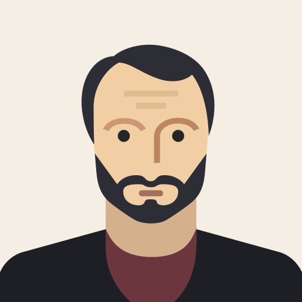

<div class="profil_header">
    <b>Profil</b>
    <mat-icon>close</mat-icon>
</div>

<div class="profil_center_container">
    
    <div>
        <p><b>John Doe</b></p>
        <p>
            <mat-icon [ngClass]="profilContactOnline ? 'green-icon' : 'white'"
            >online_prediction</mat-icon>
            * Abwesend (away) <br>
        </p>
    </div>

    <p class="schedule_position">
        <mat-icon>schedule</mat-icon>
        xx.xx Uhr Ortszeit
    </p>
    <button mat-flat-button>Basic</button> <button mat-flat-button>Basic</button> <button mat-flat-button>Basic</button>


</div>